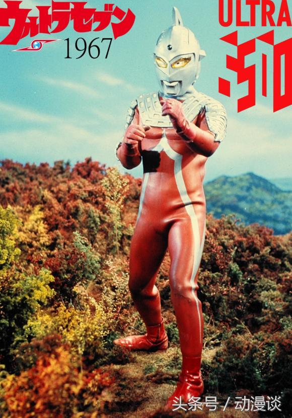
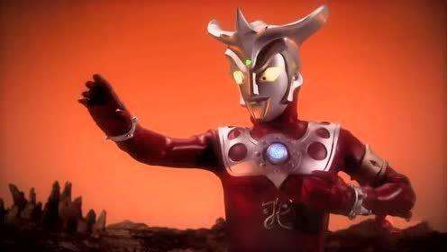
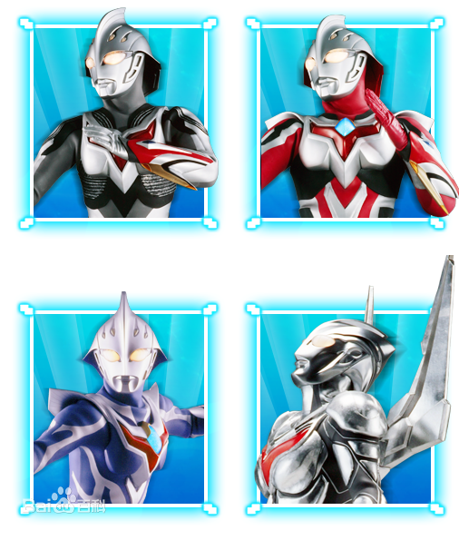

曾经差点让圆谷公司破产的三个奥特曼 |
1.赛文奥特曼 |
|  |
对于赛文奥特曼我们有几个人陌生的？会玩念力、能大能小且智勇双全。但是你能想象得到他曾让导演圆谷英二非常生气吗？奥特曼属于特摄剧而非儿童剧，可是由于它特别受少年儿童喜爱而逐渐被定性为儿童剧了，赛文奥特曼上映后观众就反映强烈了，有的直接给圆谷公司打电话说拍得太深奥了，导演气得不再拍奥特曼了。
|
2.雷欧奥特曼
|
|  |
雷欧奥特曼是败得最惨的一个。剧情太悲，雷欧技能少还经常战败，这让观众都看不下去了，收视率自然低得很，圆谷公司曾经否定了这部作品，没想到后来观众越来越喜欢了！
|
| 3.奈克瑟斯奥特曼 |
 |
这位奥特曼或许大家对它不熟悉，说起诺亚奥特曼恐怕都知道了，奈克瑟斯奥特曼就是诺亚的幼年体。其实奈克瑟斯可是圆谷公司的终结者，因为剧情比较深奥小孩子看不懂收视率不高，另外小孩子都不喜欢看悬疑黑暗的奥特曼，资金不足导致这部奥特曼集数缩水，直接破产 |
Welcome to